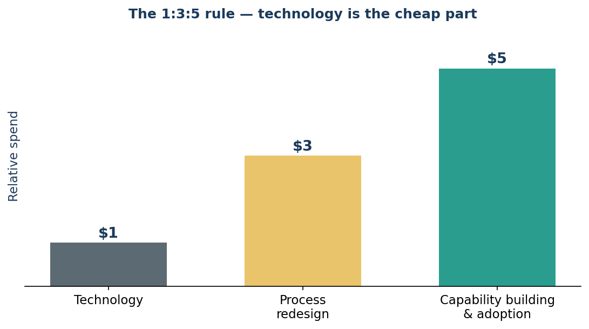
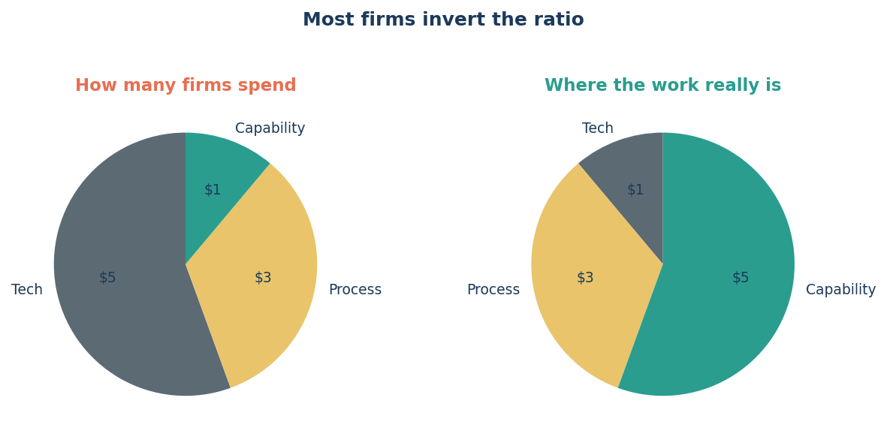

Edisi 10 — Aturan 1:3:5: teknologi itu justru bagian yang murah
Seorang kolega pulang dari konferensi dengan semangat menggebu: "Platform agent-nya lebih murah dari yang kukira — kita bisa langsung beli aja." Aku ngerti excitement-nya. Tapi ini mengingatkanku pada beli treadmill. Alatnya itu bagian yang gampang dibeli. Hasilnya datang dari semua hal yang susah dibeli: kebiasaan, rutinitas, perubahan cara kamu benar-benar menjalani hari.
McKinsey meneliti ke mana sebenarnya uang dan usaha itu mengalir dalam transformasi AI, dan menemukan pola yang jelas — sebut saja aturan 1:3:5 (Gambar 10.1). Untuk setiap $1 yang kamu keluarkan buat teknologinya sendiri, siapkan sekitar $3 buat mendesain ulang proses di sekitarnya, dan sekitar $5 buat membangun kapabilitas dan mendorong adopsi. Alatnya cuma seperseembilan dari ceritanya. Delapan-perseembilan sisanya adalah orang dan proses.

Ingat lagi worklist self-triaging punya Ana. Beli agent-nya itu $1-nya. $3-nya adalah memikirkan ulang seluruh alur kerja denial supaya daftar yang sudah ditriase benar-benar mengalir ke orang yang tepat dengan konteks yang tepat. $5-nya adalah membantu Ana dan rekan timnya percaya, belajar, dan menata ulang harinya — plus coaching-nya, office hours-nya, jawaban sabar buat "tapi kalau begini gimana…" Nilainya nggak pernah ada di lisensinya. Nilainya ada di delapan dolar di sekitarnya.
Ini kenapa ini penting, bahkan kalau kamu nggak pernah tanda tangan purchase order sekalipun: ini menjelaskan kenapa adopsi nggak bisa diburu-buru atau diperintahkan. Kalau kapabilitas dan perubahan perilaku itu literally lima kali lipat biaya tool-nya, maka pembelajaran tim itu bukan overhead yang menghambat rollout — itu-lah rollout-nya. Review human-in-the-loop, pelatihannya, obrolan jujur soal rasa takut dari Edisi 8 — itu bukan friksi. Itu acara utamanya.
Jebakan yang paling sering dijatuhi kebanyakan organisasi adalah membalik rasionya (Gambar 10.2) — menggelontorkan uang ke tools dan memperlakukan adopsi cuma sebagai memo. Begitulah cara kamu berakhir dengan software mahal yang nggak dipakai siapa-siapa. Kita lebih memilih menghabiskan uang di tempat nilainya benar-benar ada.

Jadi kalau tempo seri ini terasa sengaja pelan-pelan — menjelaskan, membuktikan, menyebut rasa takut sebelum buru-buru deploy — sekarang kamu tahu alasannya. Kita sengaja menghabiskan "delapan dolar" kita dengan niat.
Sumber
- Pola 1:3:5 ($1 teknologi : $3 proses : $5 kapabilitas/adopsi); perusahaan yang membalik rasionya — McKinsey, "How to close the agentic adoption gap" (7 Agustus 2026).